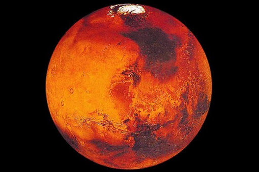
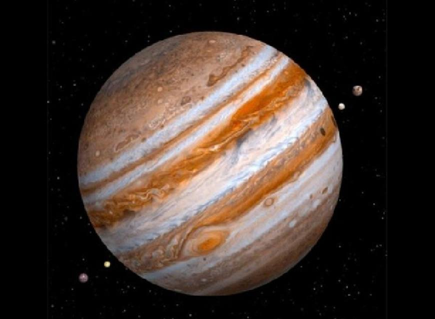

Планеты солнечной системы
Солнце

Со́лнце — одна из звёзд нашей Галактики и единственная звезда Солнечной системы.
Вокруг Солнца обращаются другие объекты этой системы: планеты и их спутники,
карликовые планеты и их спутники, астероиды, метеороиды, кометы и космическая пыль.
Земля

Земля́ — третья по удалённости от Солнца планета Солнечной системы.
Самая плотная, пятая по диаметру и массе среди всех планет и крупнейшая среди планет земной группы, в которую входят также Меркурий,
Венера и Марс.
Единственное известное человеку в настоящее время тело Солнечной системы в частности и Вселенной вообще, населённое живыми организмами.
Марс

Марс — четвёртая по удалённости от Солнца и седьмая
по размерам планета Солнечной системы; масса планеты
составляет 10,7 % массы Земли. Названа в честь Марса
— древнеримского бога войны, соответствующего древнегреческому Аресу.
Юпитер

Юпитер - пятая планета от Солнца и самая большая
в Солнечной системе. Это газовый гигант с массой
в тысячу раз больше массы Солнца, но в два с половиной
раза больше, чем у всех других планет Солнечной системы вместе взятых.